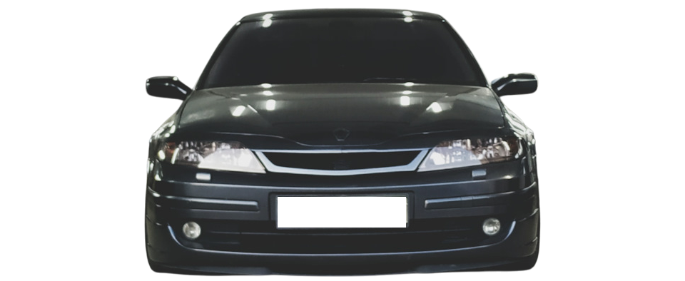
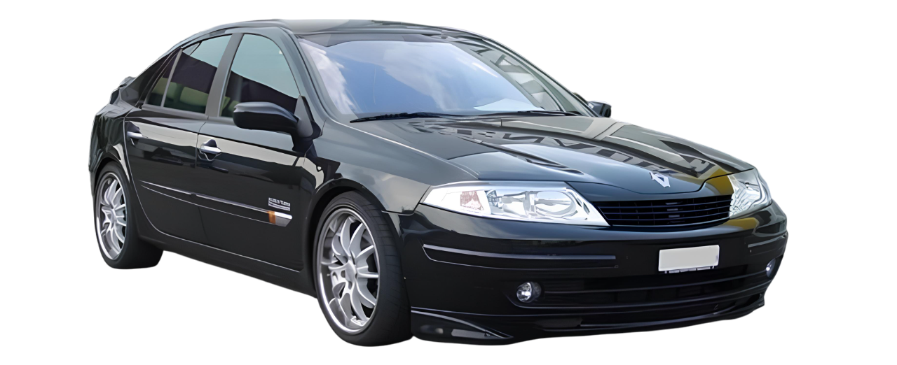

Renault Laguna II 2.0
IDE F5R — французский комфорт с технологическим
акцентом

Renault Laguna II, выпускавшаяся с 2001 по 2007 год, стала одной из самых интересных моделей французского автопрома начала 2000-х. Особенно выделяется версия с бензиновым двигателем 2.0 IDE (F5R) — инновационный по тем временам мотор с системой прямого впрыска топлива, разработанный совместно с Nissan.
Двигатель и технические особенности
- • F5R 700 / 740 имеет объём 1998 см³
- • Выдаёт около 140 л.с.
Основная "фишка" IDE — это непосредственный впрыск топлива, обеспечивающий более точное смесеобразование и экономию топлива по сравнению с традиционными многоточечными системами. Однако двигатель требователен к качеству бензина (лучше 98-й) и обслуживанию топливной системы.
Коробки передач — механическая 5-ступенчатая или автоматическая 4-ступенчатая, привод — передний. Расход топлива в смешанном цикле колеблется от 8,0 до 8,5 л/100 км, что для своего времени выглядело неплохо.
Интерьер и оснащение
Renault Laguna II получила богатое по тем временам оснащение. Даже базовые версии имели:
- • Климат-контроль (в топовых — двухзонный),
- • Круиз-контроль,
- • Бортовой компьютер с отображением расхода топлива, запаса хода и температуры,
- • Многофункциональное рулевое колесо,
- • Электроприводы стёкол и зеркал,
- • Систему бесключевого доступа с карточкой Renault Card — редкость в начале 2000-х.
На приборной панели располагался электронный дисплей, отображающий информацию о температуре, среднем расходе, скорости и предупреждения о неисправностях. Приборка отличалась лаконичностью и читабельностью, а ночная подсветка имела приятный янтарный оттенок.
Акустика и мультимедиа
Laguna II могла оснащаться фирменной аудиосистемой Cabasse Tronic — с CD-чейнджером на 6 дисков и мощными динамиками по всему салону.
В некоторых комплектациях присутствовала навигация Carminat, отображавшаяся на центральном дисплее, а управление аудиосистемой дублировалось подрулевым джойстиком.
Практичность (особенно у универсала Grandtour)
Laguna II Grandtour — это очень вместительный универсал:
- • Объём багажника — 475 л / 1515 л (сиденья сложены),
- • Ровный пол при трансформации,
- • Под полом — дополнительный отсек для мелочей,
- • Топливный бак — 70 литров,
- • Запас хода до 850 км по трассе.
Renault Laguna II 2.0 IDE — это автомобиль, который сочетает в себе французский комфорт, технологические амбиции и солидный уровень оснащения. Хотя мотор IDE имеет репутацию капризного, при правильном обслуживании он способен радовать плавной работой и умеренным расходом топлива. Для любителей тишины, мягкой подвески и богатого салона Laguna II до сих пор остаётся достойным выбором на вторичном рынке.